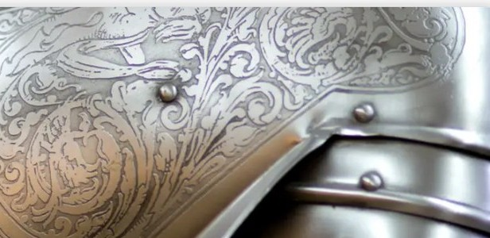

Das Mittelalter

1. Die drei Epochen
Frühmittelalter (500–1050): Althochdeutsch; erste schriftliche Zeugnisse; Klöster als Zentren der Schriftkultur; Karl der Große; Hildebrandslied.
Hochmittelalter (1050–1250): Mittelhochdeutsch; höfische Kultur; Ritter, Adel und Kirche prägen die Gesellschaft.
Spätmittelalter (1250–1500): Frühneuhochdeutsch; Städte und Bürgertum werden wichtig; Kaiser Maximilian I.
2. Herrscher
Karl der Große (747–814), Otto I. (912–973), Friedrich I. Barbarossa (ca. 1122–1190), Rudolf I. von Habsburg (1218–1291). Könige und Kaiser bestimmten Politik, Kriege und die Entwicklung ihrer Reiche.
3. Sprache
1. Lautverschiebung (vor dem Mittelalter): Indogermanisch → Germanisch. 2. Lautverschiebung (5. Jh.): betraf die deutschen Hochdialekte. Stufen: Althochdeutsch → Mittelhochdeutsch → Frühneuhochdeutsch.
4. Gesellschaft und Feudalsystem
Drei Stände: Ritter (Wehrstand), Bauern (Nährstand), Geistlichkeit (Lehrstand). Der König vergibt Lehen und Ämter: „Kein Lehen ohne Dienst, kein Dienst ohne Lehen.“ Stufen: König → Kronvasallen (hoher Adel) → Aftervasallen (Ritter, Äbte) → Abhängige (leibeigene Bauern, Knechte). Untergebene erhielten Schutz und leisteten Kriegsdienst.
5. Die Ritter
Gerüsteter Reiter, Kern des Heeres; Grundlage ist Land. Ausbildung: Page → Knappe → Schwertleite (Ritterschlag). Werte: êre (Ehre), zuht (Disziplin), mâze (Maß), hoher muot, vröude, memento mori. Blütezeit unter Barbarossa (1152–1190). Ab dem 12. Jh. lösen die Ritter das Mönchtum als Kulturträger ab.
6. Klöster
Kulturzentren; Mönchtum bis zum 12. Jh. Träger der Kultur; Äbte und Bischöfe sind Lehensmänner des Königs. Fulda: Benediktinerabtei, 744 gegründet (Bonifatius), „Bete und arbeite“; Lesen, Schreiben, handgeschriebene Bücher.
7. Merseburger Zaubersprüche
Ältester deutscher Text; 10. Jh., Messbuch in Fulda; Reste heidnisch-germanischer Dichtung. Aufbau: Historiola + Incantatio. 1. Spruch: Lösezauber (Fesseln lösen). 2. Spruch: Heilungszauber (Wodan heilt Balders Fohlen).
8. Hildebrandslied
Einziges erhaltenes althochdeutsches Heldenlied; 8. Jh., um 810 in Fulda aufgezeichnet; Stabreim. Hildebrand kehrt nach 30 Jahren zurück und muss gegen seinen Sohn Hadubrand kämpfen; Ehre gilt mehr als das Leben. Das „Jüngere Hildebrandslied“ endet versöhnlich.
9. Nibelungenlied
Bekanntestes mittelhochdeutsches Heldenepos, Verfasser unbekannt, 39 Aventiuren, Paarreim. Siegfried wird von Hagen ermordet; Kriemhild nimmt Rache. Leitmotiv: liep und leit, Liebe wird mit Leid bezahlt.
10. Parzival
Ritterroman von Wolfram von Eschenbach (ca. 1170–1220). Parzival kommt an den Artushof, versäumt auf der Gralsburg die entscheidende Frage, lernt aus seinen Fehlern, erlöst Amfortas und wird Gralskönig.
11. Minnesang
Höfische Liebeslyrik, gesungen mit Geige oder Laute; Ursprung 12./13. Jh. in der Provence. Hohe Minne: unerreichbare Dame, unerwiderte Liebe. Ebene Minne: Walther von der Vogelweide, erfüllte Liebe. Formen: Tagelied, Botenlied, Frauenstrophen, Wechsel.
12. Der Ackermann aus Böhmen
Johannes von Tepl (ca. 1350–1414), Spätmittelalter. Streitgespräch: Der Ackermann klagt den Tod an, der Tod verteidigt sich. Mittelalter (Tod) steht gegen Neuzeit (Ackermann).